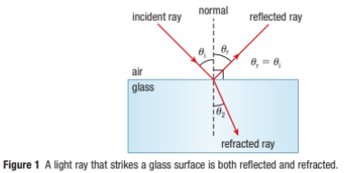
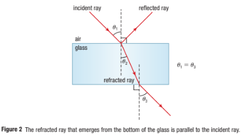
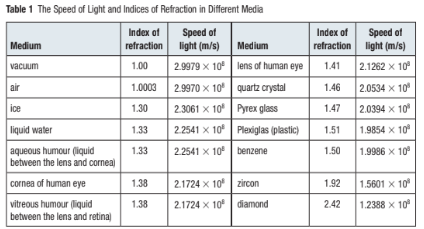
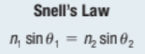
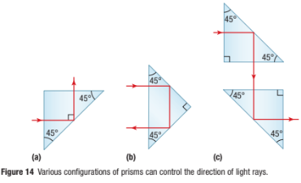

Refraction and Total Internal Reflection
Callout
Refracted and reflected rays of light account for many things that we encounter in our everyday lives.

Refraction is the bending of light as it travels at an angle from one medium to another.

Optical density is the property of a material that determines how light behaves when it travels through the material.
The more optically dense a material is, the slower a wave will move through it. When light travels from a less optically dense medium such as air to a more optically dense medium such as glass, light is refracted toward the normal.

The principle of reversibility is a light ray will follow exactly the same path if its direction of travel is reversed.
The index of refraction is the ratio of the speed of light in a vacuum to the speed of light in another medium.


The angle of refraction is the angle that a light ray makes with respect to the normal surface when it has entered a different medium.

Snell’s Law
Snell's law (also known as Snell–Descartes law and the law of refraction) is a formula used to describe the relationship between the angles of incidence and refraction, when referring to light or other waves passing through a boundary between two different isotropic media, such as water, glass, or air.

Dispersion and Prisms
Dispersion is the separation of a wave into its component parts according to a given characteristic, such as frequency or wavelength.

The angle of deviation is the angle between the incident ray and the final outgoing ray after reflection or refraction.

Total internal reflection
Total internal reflection is an effect that occurs when light encounters a boundary between a medium with a higher index of refraction and one with a lower index of refraction.

The critical angle is the smallest angle of incidence at which a light ray passing from one medium to another less refractive medium can be totally reflected from the boundary between the two.

Total internal reflection can occur even when the media appears to be otherwise transparent. If you look carefully at a glass of water, you can observe that at certain angles you do not see the table on which the glass sits.
Instead, you see a reflection of the inside of the glass. However, if you pick up the glass you will immediately see your fingers.

Prisms that are isosceles and right-angled triangles are often used to control the direction of light.
As Figure 14(a) shows, light enters from a side, is turned 908, and exits out the other side.
Figure 14(b) shows how to use the two short sides of a prism to make the light entering the base take two 908 turns before exiting back out the base.
Figure 14(c) shows an application in which two prisms are used together to alter the path of a ray of light, as in the periscope of a submarine.

Fibre Optics
Fibre optics: a technology that uses glass or plastic wire (fibre) through which data are transmitted using internally reflected light impulses.